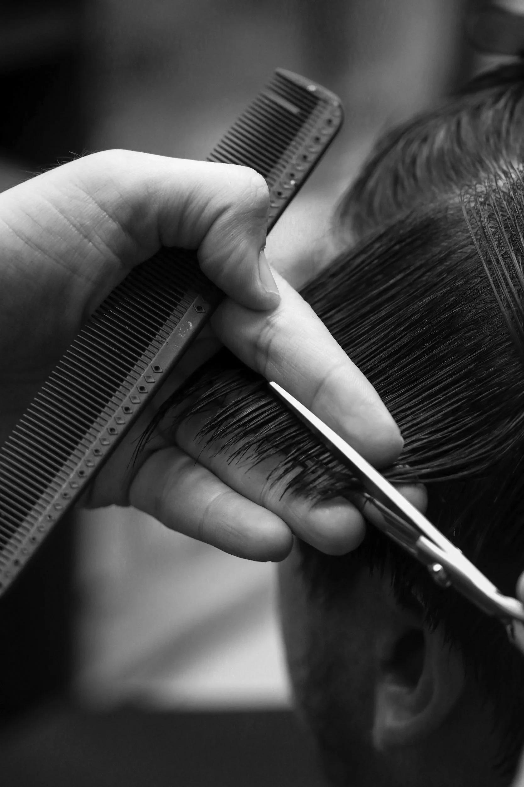

TEXTURE
Straight, wavy, curly and coily hair all behave differently. Work with the natural movement of your hair instead of constantly trying to fight it.
005 / HAIRSTYLE
A hairstyle should not exist independently from your face, hair and lifestyle.
The goal isn't to copy the most attractive haircut you see online. The goal is to understand what makes a haircut work — then adapt those principles to you.
THE FOUNDATION
Straight, wavy, curly and coily hair all behave differently. Work with the natural movement of your hair instead of constantly trying to fight it.
Hair changes the visual balance of your face. Volume, length and width can be adjusted to create a more intentional silhouette.
A haircut only works if you can maintain it. Choose something that fits the amount of time and effort you are actually willing to spend.
02 / FACE SHAPE
Face shape is a useful starting point — not a strict rulebook. Hair texture, facial features and styling can completely change the final result.
Relatively balanced proportions give you considerable flexibility. Short, medium and longer styles can all work.
Additional height and structure can create a more elongated appearance while controlled sides reduce excessive width.
Strong jawlines pair naturally with structured cuts, although textured styles can soften the overall appearance.
Avoid automatically adding excessive height. Moderate volume and some width can create more balanced proportions.
Balanced volume around the sides and lower portions of the face can complement a broader forehead and narrower jaw.
Controlled texture and volume can complement prominent cheekbones while balancing a narrower forehead and jaw.
03 / HAIR TEXTURE
Shape and structure are highly visible. Layering and controlled volume can prevent the hair from appearing completely flat.
Natural movement is already built in. Choose styles that allow the wave to remain visible instead of weighing it down.
Moisture, shape and appropriate layering are important. The haircut should account for how curls naturally contract and move.
Shape, moisture and shrinkage all matter. A stylist familiar with coily hair can help create structure without fighting its natural form.

THE RIGHT CUT STARTS WITH THE RIGHT CONVERSATION.04 / CHOOSING THE CUT
Show your barber the direction you want to go — then explain what your own hair is actually like.
Bring several examples rather than relying on one photograph.
Explain how your hair behaves naturally and whether it is thick, fine, straight, wavy or curly.
Be clear about how much length you are comfortable keeping or removing.
Explain how much time you realistically want to spend styling your hair.
HAIRCARE
Styling can improve the appearance of your hair, but a consistent routine creates the foundation.
Keep your scalp clean according to your hair type, lifestyle and how oily or dry it becomes.
Conditioner can improve manageability and reduce dryness, particularly through the lengths.
Avoid unnecessarily high heat and repeated aggressive styling that can damage the hair.
Keep the shape of your haircut intentional with trims appropriate to the style you wear.
LOOKIN' GOOD / HAIRSTYLE / 005